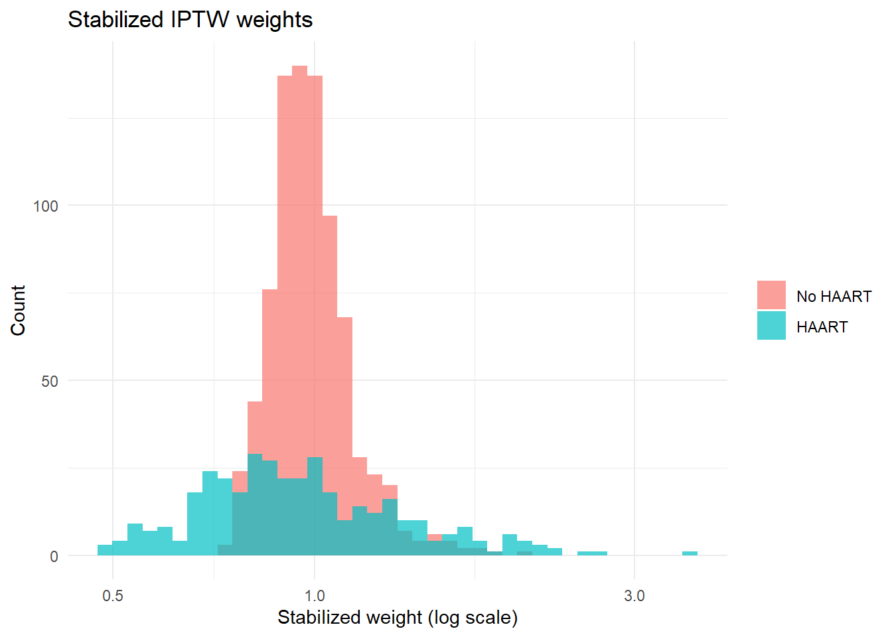

Inverse probability of treatment weighting (IPTW) is a core method in modern causal inference (Robins, Rotnitzky, and Zhao 1994). Instead of modeling the outcome directly as in g-computation, IPTW uses a model for treatment assignment to create a pseudo-population where treatment is independent of confounders. This is still point treatment only; longitudinal extensions come later.
8 Intuition: Reweighting to Mimic a Trial
IPTW reweights observational data so that, in the weighted sample, treatment appears as if it were randomized given measured covariates. Patients whose treatment assignment was unlikely for their covariate pattern receive large weights; patients whose assignment was predictable receive small weights. The result is a pseudo-population where confounders are balanced across treatment groups, just as in a randomized trial.
Definition: The Propensity Score
The propensity score(Rosenbaum and Rubin 1983) is the probability of receiving treatment given measured covariates:
\[
g(W) = P(A = 1 \mid W)
\]
We write the propensity score \(g(W)\) throughout this handbook; some texts write it \(e(W)\) for the same quantity.
IPTW weights are constructed from the propensity score:
For treated: ( w_i = )
For control: ( w_i = )
The propensity score is a balancing score: conditioning on it is sufficient to remove confounding by all measured covariates \(W\). This is why a single scalar summary can replace adjustment for many covariates.
9 Identification Using IPTW
The IPTW Identification Result
Under the same identification assumptions from Chapter 5 (consistency, exchangeability, and positivity), the average potential outcome under treatment can be expressed as
In plain terms, we recover the average outcome under treatment by upweighting treated individuals who were unlikely to be treated (given their covariates) and downweighting those who were very likely to be treated. The IPTW estimator replaces the expectation with the sample average and replaces the true ( g(W) ) with an estimated one.
This is a Horvitz-Thompson type estimator: it has the same structure as the survey sampling estimator that reweights observations by the inverse of their selection probability. In our setting, “selection” means selection into a treatment group. We upweight patients whose treatment assignment was unlikely given their covariates.
10 Data Example
We use the HIV antiretroviral therapy cohort from _data/load-haart-cohort.R(Wal and Geskus 2011), the same dataset used throughout the handbook: ever initiating HAART (ever_haart, A=1) vs never initiating HAART (A=0) for mortality (died), with confounding by age, sex, and baseline CD4 count (cd4_sqrt_baseline).
We model the probability of receiving treatment given covariates.
In practice, one might use logistic regression, SuperLearner (Laan, Polley, and Hubbard 2007), or other ML. Here we start with logistic regression for clarity.
Show code
ps_mod <-glm(ever_haart ~ age + sex + cd4_sqrt_baseline, family = binomial, data = dat)broom::tidy(ps_mod, conf.int =TRUE) |> knitr::kable(digits =3, caption ="Propensity score model coefficients")
Propensity score model coefficients
term
estimate
std.error
statistic
p.value
conf.low
conf.high
(Intercept)
0.950
0.363
2.615
0.009
0.243
1.669
age
0.004
0.006
0.586
0.558
-0.009
0.016
sex
0.150
0.157
0.956
0.339
-0.160
0.455
cd4_sqrt_baseline
-0.085
0.012
-7.107
0.000
-0.109
-0.062
Show code
dat <- dat %>%mutate(ps =predict(ps_mod, type ="response") )dat %>%summarize(min_ps =min(ps),max_ps =max(ps) )
In this example, the propensity score distributions for treated and untreated overlap substantially. This is what good overlap looks like. The two density curves cover mostly the same range of propensity scores, even though their peaks differ. For most covariate patterns there are both treated and untreated patients, which is exactly what positivity requires.
Bad overlap looks like two density curves that barely touch, with the treated group concentrated at high propensity scores and the untreated group concentrated at low ones. When this happens:
IPTW produces extreme weights for patients in the non-overlapping tails
Estimates become highly variable and unreliable
You may need to restrict your target population to the region of overlap (trimming) or reconsider your study design
As a rule of thumb, be concerned if propensity scores for either group pile up near 0 or 1.
12 Constructing IPTW Weights
Definition. Unstabilized weights are the simplest form of IPTW weights. For each individual, the weight is the inverse of the probability of receiving the treatment they actually received: for the treated (\(A = 1\)), \(w_i = 1 / g(W_i)\); for the untreated (\(A = 0\)), \(w_i = 1 / (1 - g(W_i))\).
These weights create a pseudo-population where treatment is independent of measured confounders, but they can be highly variable when some propensity scores are close to 0 or 1. For example, an untreated patient with a propensity score of 0.95 (very likely to be treated, yet was not) receives a weight of \(1 / (1 - 0.95) = 20\), meaning this single person counts as 20 in the pseudo-population.
Show code
dat <- dat %>%mutate(w_ipw =if_else(ever_haart ==1, 1/ ps, 1/ (1- ps)) )summary(dat$w_ipw)
Min. 1st Qu. Median Mean 3rd Qu. Max.
1.065 1.356 1.523 2.012 2.320 11.580
Show code
quantile(dat$w_ipw, probs =c(0.01, 0.99))
1% 99%
1.124055 6.354351
Keep an eye on
Very large weights (suggest near-violations of positivity)
Range and extreme quantiles (the 99th percentile should not be orders of magnitude larger than the median)
12.0.1 Stabilized weights
Stabilized weights multiply the standard IPTW weights by the marginal probability of treatment(Hernán and Robins 2025) (the overall proportion of patients who received the treatment they actually received, ignoring covariates). This rescaling brings the weights closer to 1 on average and reduces their variance without affecting consistency for the marginal causal effect.
For a binary treatment, the stabilized weight for individual \(i\) is:
where \(P(A = 1)\) is the marginal probability of treatment (estimated as the sample proportion treated) and \(P(A = 0) = 1 - P(A = 1)\) is the marginal probability of control. Note that the numerator uses the marginal probability of the treatment actually received: \(P(A = 1)\) for treated, \(P(A = 0)\) for untreated, not a single value for both groups.
Unstabilized weights create a pseudo-population larger than the original sample, which inflates standard errors. Stabilized weights preserve the original sample size in expectation. The result is narrower confidence intervals and more stable point estimates.
In epidemiologic practice, stabilized weights are often preferred for the Horvitz-Thompson estimator. The choice is not automatic, though:
When fitting a marginal structural model(Maya L. Petersen et al. 2007; Robins, Rotnitzky, and Zhao 1994) (weighted regression with covariates in the numerator), the numerator of the stabilized weight should include those covariates, not just the marginal treatment probability.
When the Hajek estimator (ratio of weighted sums) is used, stabilization leaves the point estimate unchanged: multiplying every weight by the constant marginal treatment probability cancels exactly in the self-normalizing ratio. Stabilization still matters for non-self-normalizing (Horvitz-Thompson) forms and for marginal structural model fitting.
Unstabilized weights are appropriate when estimating total counts of events in the pseudo-population, since stabilization rescales the population size.
Always check weight diagnostics (Section 8 below) regardless of whether weights are stabilized.
Show code
pA <-mean(dat$ever_haart)dat <- dat %>%mutate(sw_ipw =case_when( ever_haart ==1~ pA / ps, ever_haart ==0~ (1- pA) / (1- ps) ) )summary(dat$sw_ipw)
Min. 1st Qu. Median Mean 3rd Qu. Max.
0.4868 0.8727 0.9642 1.0030 1.0685 3.6283
Show code
quantile(dat$sw_ipw, probs =c(0.01, 0.99))
1% 99%
0.5441784 2.0180402
Show code
library(ggplot2)ggplot(dat, aes(sw_ipw, fill =factor(ever_haart, labels =c("No HAART", "HAART")))) +geom_histogram(bins =40, alpha =0.7, position ="identity") +scale_x_log10() +labs(x ="Stabilized weight (log scale)", y ="Count", fill =NULL,title ="Stabilized IPTW weights") +theme_minimal()

Figure 12.1: Distribution of stabilized IPTW weights by treatment group. Most weights cluster near 1, but the long right tail marks individuals whose observed treatment was unlikely given their covariates; these few observations dominate the weighted estimate and motivate the truncation discussed below.
13 Estimating the ATE via IPTW
There are several equivalent ways to use the weights.
13.1 Direct weighted mean of outcomes
Estimated risk under treatment
Show code
# Hajek (self-normalized) weighted event rate within each arm:# weighted mean of the outcome among the treated and among the untreatedrisk1_ipw <-with(dat, sum(sw_ipw * died * (ever_haart ==1)) /sum(sw_ipw * (ever_haart ==1)))risk0_ipw <-with(dat, sum(sw_ipw * died * (ever_haart ==0)) /sum(sw_ipw * (ever_haart ==0)))ate_ipw <- risk1_ipw - risk0_ipwc(risk1 = risk1_ipw, risk0 = risk0_ipw, ate = ate_ipw)
risk1 risk0 ate
0.01667651 0.03113483 -0.01445832
How to interpret these results:ate is the marginal risk difference in the weighted pseudo-population, where reweighting has made the treated and untreated groups comparable on the measured confounders. Read it as the change in mortality risk if everyone, rather than no one, had initiated HAART. It should land close to the g-computation estimate from Chapter 6. A large gap between the two is a signal to check the propensity model and the weights, not to split the difference.
This is the Hajek (self-normalized) estimator, which divides by the sum of weights rather than by \(n\). The Horvitz-Thompson estimator divides by \(n\) instead. The Hajek estimator is preferred in practice because it is more stable and does not require weights to sum to \(n\).
The direct weighted mean above gives a point estimate but no standard error. Two approaches to inference are common. The first is a nonparametric bootstrap: resample the data with replacement, re-estimate the propensity score and the weighted ATE on each bootstrap sample, and take the 2.5th and 97.5th percentiles as the 95% CI. The second is robust (sandwich) standard errors: fit a weighted regression model and use sandwich::vcovHC() to obtain variance estimates that account for the weights. The bootstrap is simple but computationally intensive. Sandwich SEs are faster and are the standard approach in practice. The weighted regression in the next section demonstrates that second option.
13.2 Weighted regression model
We can also fit a weighted regression with treatment as the only predictor.
Show code
library(sandwich)library(lmtest)# Fit a simple weighted modelfit_ipw <-glm(died ~ ever_haart, family = binomial, weights = sw_ipw, data = dat)# Robust standard errorscov_ipw <-vcovHC(fit_ipw, type ="HC0")coeftest(fit_ipw, cov_ipw)
z test of coefficients:
Estimate Std. Error z value Pr(>|z|)
(Intercept) -3.43780 0.21195 -16.2198 <2e-16 ***
ever_haart -0.63914 0.45754 -1.3969 0.1624
---
Signif. codes: 0 '***' 0.001 '**' 0.01 '*' 0.05 '.' 0.1 ' ' 1
Interpretation
The coefficient of ever_haart (on the log odds scale) estimates a marginal log-odds ratio in the pseudo-population. Note that this is on the odds ratio scale, not the risk difference scale. To obtain the marginal risk difference, predict from the weighted model under each treatment value and average, as shown in the g-computation chapter.
You can compute marginal risk differences or ratios by predicting from the model at ever_haart=1 and ever_haart=0 and standardizing
14 Comparing IPTW and G Computation
We can compare the IPTW ATE to the g computation ATE from the previous chapter.
Show code
# g computationg_mod <-glm(died ~ ever_haart + age + sex + cd4_sqrt_baseline, family = binomial, data = dat)p1_g <-predict(g_mod, newdata = dat %>%mutate(ever_haart =1), type ="response")p0_g <-predict(g_mod, newdata = dat %>%mutate(ever_haart =0), type ="response")ate_g <-mean(p1_g - p0_g)c(ate_gcomp = ate_g, ate_iptw = ate_ipw)
ate_gcomp ate_iptw
-0.01335394 -0.01445832
Under correct models and adequate positivity, these methods converge to similar estimates as sample size grows. When they disagree substantially, that usually signals at least one model is misspecified. For example:
If the outcome model omits an important interaction but the propensity score model is correct, g-computation will be biased while IPTW may be closer to the truth.
If the propensity score model is too simple (e.g., misses a nonlinear confounder-treatment relationship) but the outcome model captures the right functional form, IPTW will be biased while g-computation may be closer.
Near-violations of positivity affect IPTW more than g-computation, because extreme weights amplify noise, while g-computation extrapolates from the outcome model (which may or may not be reliable in sparse regions).
Comparing the two estimates is itself a useful diagnostic: large discrepancies should prompt you to investigate both models more carefully.
G-computation depends on correctly specifying the outcome model \(E[Y \mid A, W]\), and IPTW depends on correctly specifying the treatment model \(P(A \mid W)\). Neither uses both models at once. This motivates doubly robust methods (next chapter) (Bang and Robins 2005), which give consistent estimates if either model is correctly specified. When IPTW and g-computation give very different answers, at least one model may be misspecified.
15 Diagnostics and Practical Tips
15.0.1 Check propensity score overlap
To assess positivity, plot propensity score densities by treatment group and flag regions where one group is missing or sparse. For example, if elderly patients with prior cardiovascular disease are almost never prescribed the newer drug, you will see a gap in the treated distribution at high-risk covariate values. If the treated and untreated distributions do not overlap, the ATE may not be identifiable in that region. Consider restricting inference to the overlap population or reporting the ATT instead.
15.0.2 Check weights
Show code
dat %>%summarize(min_w =min(sw_ipw),max_w =max(sw_ipw),mean_w =mean(sw_ipw),sd_w =sd(sw_ipw) )
Large extreme weights are a red flag. Watch for these warning signs:
Maximum weight > 10 to 20: a single observation is being counted as 10 to 20 people in the pseudo-population. Your estimate may be driven by one or two individuals.
Mean of stabilized weights far from 1: stabilized weights should average approximately 1. Deviations suggest model misspecification.
Ratio of max to median weight > 20: indicates near-violation of positivity for some covariate patterns.
When you see extreme weights, consider: (1) improving your propensity score model, (2) checking for data errors in the extreme-weight observations, and (3) applying weight truncation (see below).
To make this concrete: if an untreated patient has an estimated propensity score of 0.95, their IPTW weight is 1/(1-0.95) = 20. That single patient counts as 20 people in the pseudo-population. If their outcome happens to be unusual, they can shift the entire ATE estimate. When a handful of observations carry weights above 10 or 20, the estimate is fragile, depending heavily on a few individuals whose treatment assignment was highly predictable.
15.0.3 Consider truncation
You can truncate weights at a chosen percentile, for example the 1st and 99th percentiles.
Show code
lower <-quantile(dat$sw_ipw, 0.01)upper <-quantile(dat$sw_ipw, 0.99)dat <- dat %>%mutate(sw_trunc =pmin(pmax(sw_ipw, lower), upper) )# recompute ATE with truncated weightsrisk1_trunc <-with(dat, sum(sw_trunc * died * (ever_haart ==1)) /sum(sw_trunc * (ever_haart ==1)))risk0_trunc <-with(dat, sum(sw_trunc * died * (ever_haart ==0)) /sum(sw_trunc * (ever_haart ==0)))ate_trunc <- risk1_trunc - risk0_truncc(ate_truncated = ate_trunc)
ate_truncated
-0.01430765
The Truncation Trade-Off: Bias vs. Variance
Truncation (also called “winsorizing”) reduces variance at the cost of introducing some bias. Capping extreme weights amounts to saying: “I am willing to accept a small amount of bias in exchange for a much more stable estimate.”
The trade-off in practice:
Without truncation: consistent under correct propensity model specification, positivity, and regularity conditions, but finite-sample variance may be large enough to render confidence intervals uninformatively wide
With truncation: introduces some bias (the estimator implicitly targets a modified estimand defined over the population with sufficient overlap), yet often achieves lower mean squared error
Common approaches:
Truncate at the 1st and 99th percentiles (as shown above)
Truncate at fixed values (e.g., cap weights at 10 or 20)
Report results with and without truncation as a sensitivity analysis
There is no single “right” truncation threshold. Truncation is best treated as a sensitivity analysis: report results at multiple thresholds (e.g., 1st/99th, 5th/95th percentiles, and untruncated) and examine how conclusions change.
Under severe truncation, the estimator implicitly targets a modified estimand: the ATE in the subpopulation with propensity scores bounded away from 0 and 1. This can differ from the original population-level ATE. It is not merely a statistical nuisance; it reflects a genuine change in the causal question being answered, and it should be reported transparently. For more on modified estimands under practical positivity, see Chapter 11. Outcome-blind simulations calibrated to the study’s covariate structure can help choose an appropriate truncation level (Morris, White, and Crowther 2019; Sofrygin, Laan, and Neugebauer 2017).
16 Watch it fail: poor overlap inflates the variance
The warnings about extreme weights are easier to trust as numbers. Below we hold the true effect fixed and change only how strongly treatment depends on the covariate, then compare the IPTW estimate, the largest weight, and a bootstrap standard error. The true risk difference is known by construction, so we can see exactly how far each estimate strays.
Show code
set.seed(11)n <-2000W <-rnorm(n)true_risk <-function(a, w) plogis(-0.7+0.4* a +0.9* w) # same in both scenariostrue_ate <-mean(true_risk(1, W) -true_risk(0, W))iptw_ate <-function(A, Y, ps) { # Hajek IPTW risk difference w <-ifelse(A ==1, 1/ ps, 1/ (1- ps))sum(w * A * Y) /sum(w * A) -sum(w * (1- A) * Y) /sum(w * (1- A))}boot_se <-function(A, Y, ps, B =300) {sd(replicate(B, { i <-sample(seq_along(A), replace =TRUE); iptw_ate(A[i], Y[i], ps[i]) }))}# Good overlap: treatment only mildly related to WpsA <-plogis(0.5* W); A_A <-rbinom(n, 1, psA); Y_A <-rbinom(n, 1, true_risk(A_A, W))# Near-positivity violation: treatment almost determined by WpsB <-plogis(3.5* W); A_B <-rbinom(n, 1, psB); Y_B <-rbinom(n, 1, true_risk(A_B, W))data.frame(scenario =c("good overlap", "near-violation"),max_weight =round(c(max(ifelse(A_A ==1, 1/psA, 1/(1-psA))),max(ifelse(A_B ==1, 1/psB, 1/(1-psB)))), 1),iptw_ate =round(c(iptw_ate(A_A, Y_A, psA), iptw_ate(A_B, Y_B, psB)), 3),boot_se =round(c(boot_se(A_A, Y_A, psA), boot_se(A_B, Y_B, psB)), 3),truth =round(true_ate, 3))
scenario max_weight iptw_ate boot_se truth
1 good overlap 5.9 0.060 0.023 0.082
2 near-violation 229.7 0.074 0.059 0.082
Both scenarios use the correct propensity score, so both estimates target the same truth. But the near-violation scenario produces a much larger maximum weight and a substantially wider bootstrap standard error, because the estimate is being carried by a few highly weighted patients. That is variance inflation from poor overlap, not bias.
Bias is a separate failure, and it comes from the propensity model rather than from overlap. If the propensity score is misspecified badly enough to ignore the confounder, weighting cannot remove confounding it never modeled, and the estimate collapses back toward the crude, confounded answer.
Show code
ps_wrong <-rep(mean(A_B), n) # a propensity model that ignores W entirelyround(c(misspecified_ps =iptw_ate(A_B, Y_B, ps_wrong), truth = true_ate), 3)
misspecified_ps truth
0.344 0.082
The two failure modes call for different responses. Poor overlap is a positivity problem, addressed by truncation, a redefined target population, or a support-respecting intervention (Chapter 11). A misspecified propensity model is an estimation problem, addressed by a more flexible model such as Super Learner (Chapter 9) (Laan, Polley, and Hubbard 2007). For real-world applications of MSMs to HIV treatment and adherence, see Maya L. Petersen et al. (2006).
17 Summary
Chapter Takeaways
IPTW reweights observational data to mimic a randomized trial using propensity scores; stabilized weights are often preferred for variance reduction, but the choice depends on the estimator and estimand
IPTW depends on a correctly specified treatment model; never skip overlap and weight diagnostics
Sensitive to positivity violations; extreme weights can dominate estimates
Does not use outcome-model information, motivating doubly robust methods (next chapter)
17.1 Check your understanding
Q1. Why does IPTW depend on correct specification of the treatment model rather than the outcome model?
IPTW estimates causal effects by reweighting observations using the inverse of the propensity score \(g(W) = P(A = 1 \mid W)\). The weights are constructed entirely from the treatment model; the outcome model is never used. If the propensity score model is misspecified, the weights will not correctly balance confounders across treatment groups, and the pseudo-population will still be confounded. By contrast, g-computation relies on the outcome model and never uses the treatment model. This distinction is why doubly robust methods, which use both models, are attractive.
Q2. A colleague reports IPTW results without checking propensity score overlap or weight diagnostics. What could go wrong?
Without diagnostics, several problems can go undetected. Near-violations of positivity (propensity scores close to 0 or 1) produce extreme weights, meaning a few individuals can dominate the entire estimate. The ATE may be driven by a handful of observations rather than the full sample. Standard errors may be artificially narrow or wide, and the estimate can be highly sensitive to small perturbations in the data. Additionally, if the mean of stabilized weights deviates substantially from 1, this signals propensity score model misspecification. Reporting IPTW results without overlap plots and weight summaries makes it impossible for reviewers to assess the credibility of the analysis.
Q3. What is the difference between stabilized and unstabilized weights, and why do we prefer stabilized weights?
Unstabilized weights are simply \(1 / g(W)\) for the treated and \(1 / (1 - g(W))\) for the untreated. Stabilized weights multiply these by the marginal probability of treatment: \(P(A) / g(W)\) for the treated and \((1 - P(A)) / (1 - g(W))\) for the untreated. This rescaling brings the weights closer to 1 on average and preserves the original sample size in expectation. Stabilized weights produce narrower confidence intervals and more stable point estimates without introducing bias for the marginal causal effect. In practice, stabilized weights should be the default choice.
17.2 What comes next
G-computation depends on the outcome model; IPTW depends on the treatment model. What if you could use both and stay protected when either one is wrong? The next chapter introduces doubly robust estimators (AIPW and TMLE) that combine both models and remain consistent if either one is correctly specified.
Bang, Heejung, and James M Robins. 2005. “Doubly Robust Estimation in Missing Data and Causal Inference Models.”Biometrics 61 (4): 962–73.
Laan, Mark J van der, Eric C Polley, and Alan E Hubbard. 2007. “Super Learner.”Statistical Applications in Genetics and Molecular Biology 6 (1).
Morris, Tim P., Ian R. White, and Michael J. Crowther. 2019. “Using Simulation Studies to Evaluate Statistical Methods.”Statistics in Medicine 38 (11): 2074–2102. https://doi.org/10.1002/sim.8086.
Petersen, Maya L, Steven G Deeks, Jeffrey N Martin, and Mark J van der Laan. 2007. “History-Adjusted Marginal Structural Models for Estimating Time-Varying Effect Modification.”American Journal of Epidemiology 166 (9): 985–93.
Petersen, Maya L., Yue Wang, Mark J. van der Laan, and David R. Bangsberg. 2006. “Assessing the Effectiveness of Antiretroviral Adherence Interventions: Using Marginal Structural Models to Replicate the Findings of Randomized Controlled Trials.”Journal of Acquired Immune Deficiency Syndromes 43 (Supplement 1): S96–103. https://doi.org/10.1097/01.qai.0000248339.08888.10.
Robins, James M, Andrea Rotnitzky, and Lue Ping Zhao. 1994. “Estimation of Regression Coefficients When Some Regressors Are Not Always Observed.”Journal of the American Statistical Association 89 (427): 846–66.
Rosenbaum, Paul R, and Donald B Rubin. 1983. “The Central Role of the Propensity Score in Observational Studies for Causal Effects.”Biometrika 70 (1): 41–55.
Sofrygin, Oleg, Mark J. van der Laan, and Romain Neugebauer. 2017. “simcausalR Package: Conducting Transparent and Reproducible Simulation Studies of Causal Effect Estimation with Complex Longitudinal Data.”Journal of Statistical Software 81 (2): 1–47. https://doi.org/10.18637/jss.v081.i02.
Wal, Willem M. van der, and Ronald B. Geskus. 2011. “ipw: An R Package for Inverse Probability Weighting.”Journal of Statistical Software 43 (13): 1–23. https://doi.org/10.18637/jss.v043.i13.
Source Code
---format: html---# Inverse Probability of Treatment Weighting (IPTW) {#sec-iptw}*Estimated reading time: 40 minutes*Inverse probability of treatment weighting (IPTW) is a core method in modern causal inference [@robins1994estimation]. Instead of modeling the outcome directly as in g-computation, IPTW uses a model for **treatment assignment** to create a pseudo-population where treatment is independent of confounders. This is still point treatment only; longitudinal extensions come later.---# Intuition: Reweighting to Mimic a TrialIPTW reweights observational data so that, in the weighted sample, treatment appears as if it were randomized given measured covariates. Patients whose treatment assignment was unlikely for their covariate pattern receive large weights; patients whose assignment was predictable receive small weights. The result is a **pseudo-population** where confounders are balanced across treatment groups, just as in a randomized trial.:::{.callout-note}## Definition: The Propensity ScoreThe **propensity score** [@rosenbaum1983propensity] is the probability of receiving treatment given measured covariates:$$g(W) = P(A = 1 \mid W)$$We write the propensity score $g(W)$ throughout this handbook; some texts write it $e(W)$ for the same quantity.IPTW weights are constructed from the propensity score:- For treated: \( \displaystyle w_i = \frac{1}{g(W_i)} \)- For control: \( \displaystyle w_i = \frac{1}{1 - g(W_i)} \)The propensity score is a **balancing score**: conditioning on it is sufficient to remove confounding by all measured covariates $W$. This is why a single scalar summary can replace adjustment for many covariates.:::---# Identification Using IPTW:::{.callout-note}## The IPTW Identification ResultUnder the same identification assumptions from @sec-roadmap (consistency, exchangeability, and positivity), the average potential outcome under treatment can be expressed as$$E[Y(1)] = E\left[ \frac{I(A = 1) Y}{g(W)} \right]$$and under control$$E[Y(0)] = E\left[ \frac{I(A = 0) Y}{1 - g(W)} \right]$$In plain terms, we recover the average outcome under treatment by upweighting treated individuals who were unlikely to be treated (given their covariates) and downweighting those who were very likely to be treated. The IPTW estimator replaces the expectation with the sample average and replaces the true \( g(W) \) with an estimated one.:::This is a **Horvitz-Thompson type** estimator: it has the same structure as the survey sampling estimator that reweights observations by the inverse of their selection probability. In our setting, "selection" means selection into a treatment group. We upweight patients whose treatment assignment was unlikely given their covariates.---# Data ExampleWe use the HIV antiretroviral therapy cohort from `_data/load-haart-cohort.R`[@vanderwal2011ipw], the same dataset used throughout the handbook: ever initiating HAART (`ever_haart`, A=1) vs never initiating HAART (A=0) for mortality (`died`), with confounding by age, sex, and baseline CD4 count (`cd4_sqrt_baseline`).```{r}#| interactive: true#| code-fold: truelibrary(tidyverse)source("_data/load-haart-cohort.R")dat <-as_tibble(haart_baseline)dat %>%head()```---# Estimating the Propensity ScoreWe model the probability of receiving treatment given covariates.In practice, one might use logistic regression, SuperLearner [@vanderLaan2007superlearner], or other ML. Here we start with logistic regression for clarity.```{r}#| interactive: true#| code-fold: trueps_mod <-glm(ever_haart ~ age + sex + cd4_sqrt_baseline, family = binomial, data = dat)broom::tidy(ps_mod, conf.int =TRUE) |> knitr::kable(digits =3, caption ="Propensity score model coefficients")dat <- dat %>%mutate(ps =predict(ps_mod, type ="response") )dat %>%summarize(min_ps =min(ps),max_ps =max(ps) )```We can visualize the propensity score distribution.```{r}#| interactive: true#| code-fold: trueggplot(dat, aes(x = ps, fill =factor(ever_haart))) +geom_density(alpha =0.4) +labs(x ="Estimated propensity score P(ever_haart = 1 | W)",fill ="HAART",title ="Propensity score overlap" ) +theme_minimal()```:::{.callout-important}## Reading the Propensity Score Overlap PlotIn this example, the propensity score distributions for treated and untreated overlap substantially. This is what **good overlap** looks like. The two density curves cover mostly the same range of propensity scores, even though their peaks differ. For most covariate patterns there are both treated and untreated patients, which is exactly what positivity requires.**Bad overlap** looks like two density curves that barely touch, with the treated group concentrated at high propensity scores and the untreated group concentrated at low ones. When this happens:- IPTW produces extreme weights for patients in the non-overlapping tails- Estimates become highly variable and unreliable- You may need to restrict your target population to the region of overlap (trimming) or reconsider your study designAs a rule of thumb, be concerned if propensity scores for either group pile up near 0 or 1.:::---# Constructing IPTW Weights**Definition.** Unstabilized weights are the simplest form of IPTW weights. For each individual, the weight is the inverse of the probability of receiving the treatment they actually received: for the treated ($A = 1$), $w_i = 1 / g(W_i)$; for the untreated ($A = 0$), $w_i = 1 / (1 - g(W_i))$.These weights create a pseudo-population where treatment is independent of measured confounders, but they can be highly variable when some propensity scores are close to 0 or 1. For example, an untreated patient with a propensity score of 0.95 (very likely to be treated, yet was not) receives a weight of $1 / (1 - 0.95) = 20$, meaning this single person counts as 20 in the pseudo-population.```{r}#| interactive: true#| code-fold: truedat <- dat %>%mutate(w_ipw =if_else(ever_haart ==1, 1/ ps, 1/ (1- ps)) )summary(dat$w_ipw)quantile(dat$w_ipw, probs =c(0.01, 0.99))```Keep an eye on- Very large weights (suggest near-violations of positivity)- Range and extreme quantiles (the 99th percentile should not be orders of magnitude larger than the median)### Stabilized weightsStabilized weights multiply the standard IPTW weights by the **marginal probability of treatment** [@hernan2025whatif] (the overall proportion of patients who received the treatment they actually received, ignoring covariates). This rescaling brings the weights closer to 1 on average and reduces their variance without affecting consistency for the marginal causal effect.For a binary treatment, the stabilized weight for individual $i$ is:$$SW_i = \frac{P(A = 1)}{g(W_i)} \quad \text{if } A_i = 1, \qquad SW_i = \frac{P(A = 0)}{1 - g(W_i)} \quad \text{if } A_i = 0$$where $P(A = 1)$ is the marginal probability of treatment (estimated as the sample proportion treated) and $P(A = 0) = 1 - P(A = 1)$ is the marginal probability of control. Note that the numerator uses the marginal probability of the treatment *actually received*: $P(A = 1)$ for treated, $P(A = 0)$ for untreated, not a single value for both groups.Unstabilized weights create a pseudo-population larger than the original sample, which inflates standard errors. Stabilized weights preserve the original sample size in expectation. The result is narrower confidence intervals and more stable point estimates.In epidemiologic practice, stabilized weights are often preferred for the Horvitz-Thompson estimator. The choice is not automatic, though:- When fitting a **marginal structural model** [@petersen2007msm; @robins1994estimation] (weighted regression with covariates in the numerator), the numerator of the stabilized weight should include those covariates, not just the marginal treatment probability.- When the **Hajek estimator** (ratio of weighted sums) is used, stabilization leaves the point estimate **unchanged**: multiplying every weight by the constant marginal treatment probability cancels exactly in the self-normalizing ratio. Stabilization still matters for non-self-normalizing (Horvitz-Thompson) forms and for marginal structural model fitting.- Unstabilized weights are appropriate when estimating **total counts** of events in the pseudo-population, since stabilization rescales the population size.- Always check weight diagnostics (Section 8 below) regardless of whether weights are stabilized.```{r}#| interactive: truepA <-mean(dat$ever_haart)dat <- dat %>%mutate(sw_ipw =case_when( ever_haart ==1~ pA / ps, ever_haart ==0~ (1- pA) / (1- ps) ) )summary(dat$sw_ipw)quantile(dat$sw_ipw, probs =c(0.01, 0.99))``````{r}#| label: fig-iptw-weights#| fig-cap: "Distribution of stabilized IPTW weights by treatment group. Most weights cluster near 1, but the long right tail marks individuals whose observed treatment was unlikely given their covariates; these few observations dominate the weighted estimate and motivate the truncation discussed below."#| code-fold: truelibrary(ggplot2)ggplot(dat, aes(sw_ipw, fill =factor(ever_haart, labels =c("No HAART", "HAART")))) +geom_histogram(bins =40, alpha =0.7, position ="identity") +scale_x_log10() +labs(x ="Stabilized weight (log scale)", y ="Count", fill =NULL,title ="Stabilized IPTW weights") +theme_minimal()```---# Estimating the ATE via IPTWThere are several equivalent ways to use the weights.## Direct weighted mean of outcomesEstimated risk under treatment```{r}#| interactive: true# Hajek (self-normalized) weighted event rate within each arm:# weighted mean of the outcome among the treated and among the untreatedrisk1_ipw <-with(dat, sum(sw_ipw * died * (ever_haart ==1)) /sum(sw_ipw * (ever_haart ==1)))risk0_ipw <-with(dat, sum(sw_ipw * died * (ever_haart ==0)) /sum(sw_ipw * (ever_haart ==0)))ate_ipw <- risk1_ipw - risk0_ipwc(risk1 = risk1_ipw, risk0 = risk0_ipw, ate = ate_ipw)```**How to interpret these results:** `ate` is the marginal risk difference in the weighted pseudo-population, where reweighting has made the treated and untreated groups comparable on the measured confounders. Read it as the change in mortality risk if everyone, rather than no one, had initiated HAART. It should land close to the g-computation estimate from @sec-gcomputation. A large gap between the two is a signal to check the propensity model and the weights, not to split the difference.This matches the formula$$\hat E[Y(1)] = \frac{\sum_i SW_i Y_i I(A_i = 1)}{\sum_i SW_i I(A_i = 1)}$$This is the Hajek (self-normalized) estimator, which divides by the sum of weights rather than by $n$. The Horvitz-Thompson estimator divides by $n$ instead. The Hajek estimator is preferred in practice because it is more stable and does not require weights to sum to $n$.The direct weighted mean above gives a point estimate but no standard error. Two approaches to inference are common. The first is a **nonparametric bootstrap**: resample the data with replacement, re-estimate the propensity score and the weighted ATE on each bootstrap sample, and take the 2.5th and 97.5th percentiles as the 95% CI. The second is **robust (sandwich) standard errors**: fit a weighted regression model and use `sandwich::vcovHC()` to obtain variance estimates that account for the weights. The bootstrap is simple but computationally intensive. Sandwich SEs are faster and are the standard approach in practice. The weighted regression in the next section demonstrates that second option.## Weighted regression modelWe can also fit a weighted regression with treatment as the only predictor.```{r}#| interactive: true#| warning: falselibrary(sandwich)library(lmtest)# Fit a simple weighted modelfit_ipw <-glm(died ~ ever_haart, family = binomial, weights = sw_ipw, data = dat)# Robust standard errorscov_ipw <-vcovHC(fit_ipw, type ="HC0")coeftest(fit_ipw, cov_ipw)```Interpretation- The coefficient of `ever_haart` (on the log odds scale) estimates a marginal log-odds ratio in the pseudo-population. Note that this is on the odds ratio scale, not the risk difference scale. To obtain the marginal risk difference, predict from the weighted model under each treatment value and average, as shown in the g-computation chapter.- You can compute marginal risk differences or ratios by predicting from the model at `ever_haart=1` and `ever_haart=0` and standardizing---# Comparing IPTW and G ComputationWe can compare the IPTW ATE to the g computation ATE from the previous chapter.```{r}#| interactive: true# g computationg_mod <-glm(died ~ ever_haart + age + sex + cd4_sqrt_baseline, family = binomial, data = dat)p1_g <-predict(g_mod, newdata = dat %>%mutate(ever_haart =1), type ="response")p0_g <-predict(g_mod, newdata = dat %>%mutate(ever_haart =0), type ="response")ate_g <-mean(p1_g - p0_g)c(ate_gcomp = ate_g, ate_iptw = ate_ipw)```Under correct models and adequate positivity, these methods converge to similar estimates as sample size grows. When they disagree substantially, that usually signals **at least one model is misspecified**. For example:- If the outcome model omits an important interaction but the propensity score model is correct, g-computation will be biased while IPTW may be closer to the truth.- If the propensity score model is too simple (e.g., misses a nonlinear confounder-treatment relationship) but the outcome model captures the right functional form, IPTW will be biased while g-computation may be closer.- Near-violations of **positivity** affect IPTW more than g-computation, because extreme weights amplify noise, while g-computation extrapolates from the outcome model (which may or may not be reliable in sparse regions).Comparing the two estimates is itself a useful diagnostic: large discrepancies should prompt you to investigate both models more carefully.G-computation depends on correctly specifying the outcome model $E[Y \mid A, W]$, and IPTW depends on correctly specifying the treatment model $P(A \mid W)$. Neither uses both models at once. This motivates **doubly robust** methods (next chapter) [@bang2005doubly], which give consistent estimates if *either* model is correctly specified. When IPTW and g-computation give very different answers, at least one model may be misspecified.---# Diagnostics and Practical Tips### Check propensity score overlapTo assess positivity, plot propensity score densities by treatment group and flag regions where one group is missing or sparse. For example, if elderly patients with prior cardiovascular disease are almost never prescribed the newer drug, you will see a gap in the treated distribution at high-risk covariate values. If the treated and untreated distributions do not overlap, the ATE may not be identifiable in that region. Consider restricting inference to the overlap population or reporting the ATT instead.### Check weights```{r}#| interactive: truedat %>%summarize(min_w =min(sw_ipw),max_w =max(sw_ipw),mean_w =mean(sw_ipw),sd_w =sd(sw_ipw) )```:::{.callout-warning}## When Extreme Weights Signal TroubleLarge extreme weights are a red flag. Watch for these warning signs:- **Maximum weight > 10 to 20**: a single observation is being counted as 10 to 20 people in the pseudo-population. Your estimate may be driven by one or two individuals.- **Mean of stabilized weights far from 1**: stabilized weights should average approximately 1. Deviations suggest model misspecification.- **Ratio of max to median weight > 20**: indicates near-violation of positivity for some covariate patterns.When you see extreme weights, consider: (1) improving your propensity score model, (2) checking for data errors in the extreme-weight observations, and (3) applying weight truncation (see below).To make this concrete: if an untreated patient has an estimated propensity score of 0.95, their IPTW weight is 1/(1-0.95) = 20. That single patient counts as 20 people in the pseudo-population. If their outcome happens to be unusual, they can shift the entire ATE estimate. When a handful of observations carry weights above 10 or 20, the estimate is fragile, depending heavily on a few individuals whose treatment assignment was highly predictable.:::### Consider truncationYou can truncate weights at a chosen percentile, for example the 1st and 99th percentiles.```{r}#| interactive: true#| code-fold: truelower <-quantile(dat$sw_ipw, 0.01)upper <-quantile(dat$sw_ipw, 0.99)dat <- dat %>%mutate(sw_trunc =pmin(pmax(sw_ipw, lower), upper) )# recompute ATE with truncated weightsrisk1_trunc <-with(dat, sum(sw_trunc * died * (ever_haart ==1)) /sum(sw_trunc * (ever_haart ==1)))risk0_trunc <-with(dat, sum(sw_trunc * died * (ever_haart ==0)) /sum(sw_trunc * (ever_haart ==0)))ate_trunc <- risk1_trunc - risk0_truncc(ate_truncated = ate_trunc)```:::{.callout-warning}## The Truncation Trade-Off: Bias vs. VarianceTruncation (also called "winsorizing") reduces variance at the cost of introducing some bias. Capping extreme weights amounts to saying: "I am willing to accept a small amount of bias in exchange for a much more stable estimate."**The trade-off in practice:**- **Without truncation**: consistent under correct propensity model specification, positivity, and regularity conditions, but finite-sample variance may be large enough to render confidence intervals uninformatively wide- **With truncation**: introduces some bias (the estimator implicitly targets a modified estimand defined over the population with sufficient overlap), yet often achieves lower mean squared error**Common approaches:**- Truncate at the 1st and 99th percentiles (as shown above)- Truncate at fixed values (e.g., cap weights at 10 or 20)- Report results with and without truncation as a sensitivity analysisThere is no single "right" truncation threshold. Truncation is best treated as a **sensitivity analysis**: report results at multiple thresholds (e.g., 1st/99th, 5th/95th percentiles, and untruncated) and examine how conclusions change.Under severe truncation, the estimator implicitly targets a modified estimand: the ATE in the subpopulation with propensity scores bounded away from 0 and 1. This can differ from the original population-level ATE. It is not merely a statistical nuisance; it reflects a genuine change in the causal question being answered, and it should be reported transparently. For more on modified estimands under practical positivity, see @sec-positivity-overlap. Outcome-blind simulations calibrated to the study's covariate structure can help choose an appropriate truncation level [@morris2019simulation; @sofrygin2017simcausal].:::---# Watch it fail: poor overlap inflates the varianceThe warnings about extreme weights are easier to trust as numbers. Below we hold the true effect fixed and change only how strongly treatment depends on the covariate, then compare the IPTW estimate, the largest weight, and a bootstrap standard error. The true risk difference is known by construction, so we can see exactly how far each estimate strays.```{r}#| code-fold: showset.seed(11)n <-2000W <-rnorm(n)true_risk <-function(a, w) plogis(-0.7+0.4* a +0.9* w) # same in both scenariostrue_ate <-mean(true_risk(1, W) -true_risk(0, W))iptw_ate <-function(A, Y, ps) { # Hajek IPTW risk difference w <-ifelse(A ==1, 1/ ps, 1/ (1- ps))sum(w * A * Y) /sum(w * A) -sum(w * (1- A) * Y) /sum(w * (1- A))}boot_se <-function(A, Y, ps, B =300) {sd(replicate(B, { i <-sample(seq_along(A), replace =TRUE); iptw_ate(A[i], Y[i], ps[i]) }))}# Good overlap: treatment only mildly related to WpsA <-plogis(0.5* W); A_A <-rbinom(n, 1, psA); Y_A <-rbinom(n, 1, true_risk(A_A, W))# Near-positivity violation: treatment almost determined by WpsB <-plogis(3.5* W); A_B <-rbinom(n, 1, psB); Y_B <-rbinom(n, 1, true_risk(A_B, W))data.frame(scenario =c("good overlap", "near-violation"),max_weight =round(c(max(ifelse(A_A ==1, 1/psA, 1/(1-psA))),max(ifelse(A_B ==1, 1/psB, 1/(1-psB)))), 1),iptw_ate =round(c(iptw_ate(A_A, Y_A, psA), iptw_ate(A_B, Y_B, psB)), 3),boot_se =round(c(boot_se(A_A, Y_A, psA), boot_se(A_B, Y_B, psB)), 3),truth =round(true_ate, 3))```Both scenarios use the correct propensity score, so both estimates target the same truth. But the near-violation scenario produces a much larger maximum weight and a substantially wider bootstrap standard error, because the estimate is being carried by a few highly weighted patients. That is variance inflation from poor overlap, not bias.Bias is a separate failure, and it comes from the propensity model rather than from overlap. If the propensity score is misspecified badly enough to ignore the confounder, weighting cannot remove confounding it never modeled, and the estimate collapses back toward the crude, confounded answer.```{r}ps_wrong <-rep(mean(A_B), n) # a propensity model that ignores W entirelyround(c(misspecified_ps =iptw_ate(A_B, Y_B, ps_wrong), truth = true_ate), 3)```The two failure modes call for different responses. Poor overlap is a positivity problem, addressed by truncation, a redefined target population, or a support-respecting intervention (@sec-positivity-overlap). A misspecified propensity model is an estimation problem, addressed by a more flexible model such as Super Learner (@sec-superlearner) [@vanderLaan2007superlearner]. For real-world applications of MSMs to HIV treatment and adherence, see @petersen2006msm.---# Summary:::{.callout-tip}## Chapter Takeaways- IPTW reweights observational data to mimic a randomized trial using propensity scores; **stabilized weights** are often preferred for variance reduction, but the choice depends on the estimator and estimand- IPTW depends on a correctly specified treatment model; never skip overlap and weight diagnostics- Sensitive to positivity violations; extreme weights can dominate estimates- Does not use outcome-model information, motivating **doubly robust** methods (next chapter):::---## Check your understanding<details><summary><strong>Q1. Why does IPTW depend on correct specification of the treatment model rather than the outcome model?</strong></summary>IPTW estimates causal effects by reweighting observations using the inverse of the propensity score $g(W) = P(A = 1 \mid W)$. The weights are constructed entirely from the treatment model; the outcome model is never used. If the propensity score model is misspecified, the weights will not correctly balance confounders across treatment groups, and the pseudo-population will still be confounded. By contrast, g-computation relies on the outcome model and never uses the treatment model. This distinction is why doubly robust methods, which use both models, are attractive.</details><details><summary><strong>Q2. A colleague reports IPTW results without checking propensity score overlap or weight diagnostics. What could go wrong?</strong></summary>Without diagnostics, several problems can go undetected. Near-violations of positivity (propensity scores close to 0 or 1) produce extreme weights, meaning a few individuals can dominate the entire estimate. The ATE may be driven by a handful of observations rather than the full sample. Standard errors may be artificially narrow or wide, and the estimate can be highly sensitive to small perturbations in the data. Additionally, if the mean of stabilized weights deviates substantially from 1, this signals propensity score model misspecification. Reporting IPTW results without overlap plots and weight summaries makes it impossible for reviewers to assess the credibility of the analysis.</details><details><summary><strong>Q3. What is the difference between stabilized and unstabilized weights, and why do we prefer stabilized weights?</strong></summary>Unstabilized weights are simply $1 / g(W)$ for the treated and $1 / (1 - g(W))$ for the untreated. Stabilized weights multiply these by the marginal probability of treatment: $P(A) / g(W)$ for the treated and $(1 - P(A)) / (1 - g(W))$ for the untreated. This rescaling brings the weights closer to 1 on average and preserves the original sample size in expectation. Stabilized weights produce narrower confidence intervals and more stable point estimates without introducing bias for the marginal causal effect. In practice, stabilized weights should be the default choice.</details>---## What comes nextG-computation depends on the outcome model; IPTW depends on the treatment model. What if you could use both and stay protected when either one is wrong? The next chapter introduces doubly robust estimators (AIPW and TMLE) that combine both models and remain consistent if either one is correctly specified.